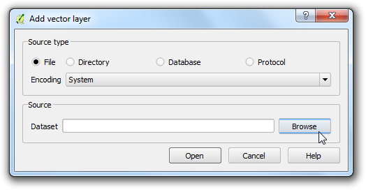

Εργασία με Χαρακτηριστικά
Τα δεδομένα GIS έχουν δύο μέρη - τα χαρακτηριστικά και τις ιδιότητες. Τα χαρακτηριστικά είναι δομημένα δεδομένα για κάθε χαρακτηριστικό. Αυτό το tutorial δείχνει πώς να δείτε τα χαρακτηριστικά και να κάνουμε τα βασικά ερωτήματα σχετικά με τους QGIS.
Επισκόπηση του έργου
Το σύνολο των δεδομένων για αυτό το tutorial περιέχει πληροφορίες σχετικά με κατοικημένες περιοχές του κόσμου. Ο στόχος είναι να αναζητήσετε και να βρείτε όλες τις πρωτεύουσες του κόσμου που έχουν πληθυσμό άνω των 1.000.000.
Άλλες δεξιότητες που θα μάθετε
Επιλέγοντας χαρακτηριστικά χρησιμοποιώντας εντολές.
Αποεπιλέξτε χαρακτηριστικά από ένα στρώμα χρησιμοποιώντας την γραμμή εργαλείων Attributes
Χρησιμοποιήστε το Query Builder για να εμφανίσετε ένα υποσύνολο χαρακτηριστικών από ένα στρώμα.
Διαδικασία
Αφού έχετε μεταφορτώσει τα δεδομένα, ανοίξτε το QGIS. Πηγαίνετε στο .

Κάντε κλικ στο Browse και μεταβείτε στο φάκελο όπου έχετε κατεβάσει τα δεδομένα.

Εντοπίστε το κατεβασμένο αρχείο zip ne_10m_populated_places_simple.zip. Δεν χρειάζεται να αποσυμπιέσετε το αρχείο. Το QGIS έχει τη δυνατότητα να διαβάσει απευθείας τα αρχεία zip. Επιλέξτε το αρχείο και κάντε κλικ στο κουμπί Open.

Η επιλεγμένη στρώση θα πρέπει τώρα να τοποθετηθεί στο QGIS και θα εμφανιστούν πολλά σημεία που αντιπροσωπεύουν τις κατοικημένες περιοχές του κόσμου.

Κάντε δεξί-κλικ στο στρώμα και επιλέξτε Open Attribute Table.

Εξερευνήστε τα διάφορα χαρακτηριστικά και τις αξίες τους.

Ενδιαφερόμαστε για τον πληθυσμό του κάθε χαρακτηριστικού, έτσι pop_max είναι το πεδίο που ψάχνουμε. Μπορείτε να κάνετε κλικ δύο φορές στο πεδίο κεφαλίδας για να ταξινομήσετε τη στήλη με φθίνουσα σειρά.

Τώρα είμαστε σε θέση να εκτελέσουμε το ερώτημα για τα συγκεκριμένα χαρακτηριστικά. Το QGIS χρησιμοποιεί εντολές που μοιάζουν με SQL για να εκτελέσει τα ερωτήματα. Κάντε κλικ στο Select features using an expression.

Στο παράθυρο Select By Expression , επεκτείνετε το τμήμα Fields and Values και κάντε διπλό-κλικ στην ετικέτα pop_max. Θα παρατηρήσετε ότι προστίθεται στο κάτω μέρος της έκφρασης. Αν δεν είστε σίγουροι για τις τιμές των πεδίων, μπορείτε να κάνετε κλικ στο Load all unique values για να δείτε ποιές είναι οι τιμές των γνωρισμάτων για το συγκεκριμένο υποσύνολο δεδομένων. Για αυτή την άσκηση, ψάχνουμε να βρούμε όλα τα χαρακτηριστικά που έχουν πληθυσμό άνω των 1.000.000. Οπότε ολοκληρώστε την εντολή όπως φαίνεται παρακάτω και κάντε κλικ στο Select.

Κάντε κλίκ στο Close και επιστρέψτε στο κεντρικό παράθυρο του QGIS. Θα παρατηρήσετε οτι ένα υποσύνολο σημείων εμφανίζεται τώρα με κίτρινο χρώμα. Αυτό είναι αποτέλεσμα του ερωτήματος και πλέον είστε σε θέση να δείτε όλες τις περιοχές από το σύνολο των δεδομένων που έχουν τιμή για το γνώρισμα του “pop_max” παραπάνω από 1,000,000.

Ο στόχος αυτής της άσκησης είναι να βρεθούν τα μέρη που είναι πρωτεύουσες χωρών. Το πεδίο που περιέχει αυτά τα δεδομένα είναι το adm0cap. Η τιμή “1” δείχνει οτι η συγκεκριμένη περιοχή είναι μια πρωτεύουσα. Μπορούμε να προσθέσουμε αυτά τα κριτήρια στην προηγούμενη εντολή χρησιμοποιώντας την λογική πράξη and . Μπορούμε να βελτιώσουμε το ερώτημα μας ώστε να επιλέγει μόνο τα σημεία αυτά που είναι πρωτεύουσες. Κάντε κλικ στο κουμπί Select feature using an expression, στον πίνακα χαρακτηριστικών και αφού εισάγετε την εντολή που δίνεται παρακάτω πατήστε Select και μετά Close.
"pop_max" > 1000000 and "adm0cap" = 1

Επιστρέψτε στο κύριο παράθυρο του QGIS. Τώρα μπορείτε να δείτε ένα μικρότερο υποσύνολο των επιλεγμένων σημείων. Αυτό είναι το αποτέλεσμα του δεύτερου ερωτήματος και δείχνει όλα τα σημεία από το αρχείο των δεδομένων τα οποία είναι πρωτεύουσες χωρών και έχουν πληθυσμό πάνω από 1.000.000. Αν θέλαμε να κάνουμε παραπάνω ανάλυση σε αυτό το υποσύνολο των δεδομένων, μπορούμε να κάνουμε αυτή την επιλογή μόνιμη. Κάντε δεξί-κλικ στο στρώμα “ne_10m_populated_places_simple`` και επιλέξτε Ιδιότητες Properties.

Στην καρτέλα Γενικά General, μεταφερθείτε προς τα κάτω στο τμήμα Feature subset. Κάντε κλικ στο Query Builder.

Εισάγετε την ίδια εντολή όπως και προηγουμένως και πατήστε OK.
"pop_max" > 1000000 and "adm0cap" = 1

Πίσω στο κεντρικό παράθυρο του QGIS, θα δείτε οτι τα υπόλοιπα σημεία έχουν εξαφανιστεί. Τώρα μπορείτε να πραγματοποιήσετε οποιαδήποτε άλλη ανάλυση στο συγκεκριμένο στρώμα και μόνο τα χαρακτηριστικά τα οποία ταιριάζουν με την εντολή σας θα χρησιμοποιηθούν. Μπορεί να παρατηρήσετε οτι τα σημεία ακόμα εμφανίζονται με κίτρινο χρώμα. Αυτό συμβαίνει γιατί είναι ακόμα επιλεγμένα. Βρείτε το κουμπί Deselect Features from All Layers στην γραμμή εργαλείων Attributes και πατήστε το

Θα δείτε οτι τα σημεία τώρα έχουν αποεπιλεχθεί και έχουν πλέον το αρχικό τους χρώμα.